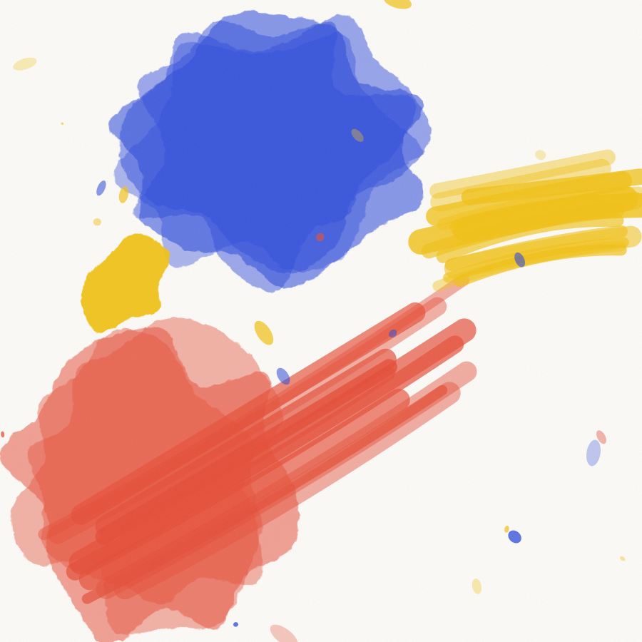
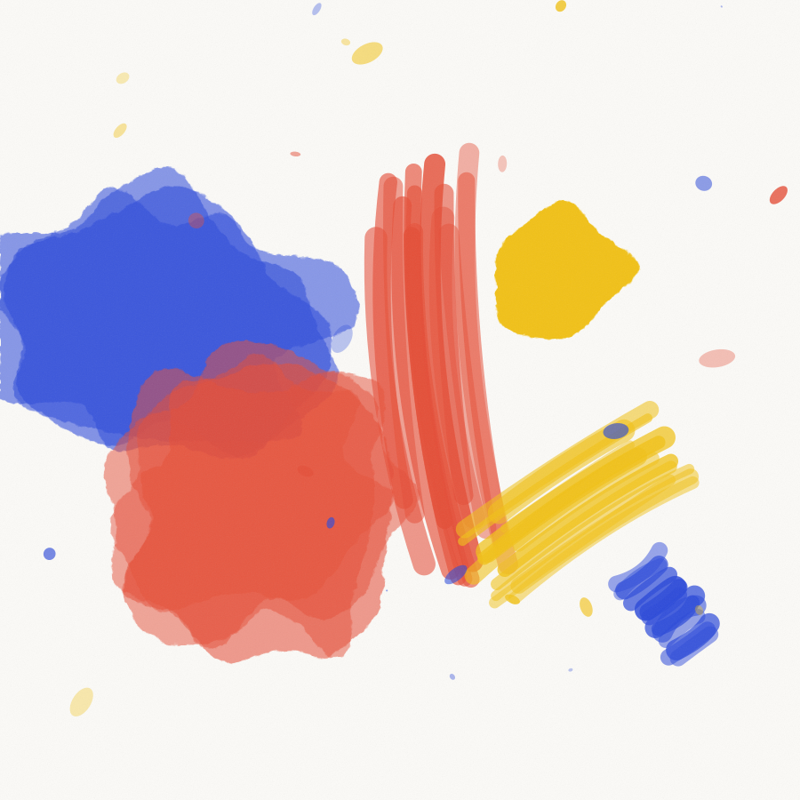
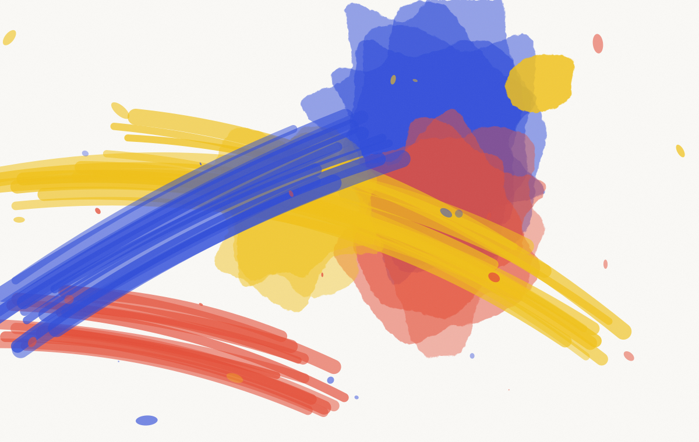

Projet 03 · Signalétique et identité · 2025
On nous a demandé un logo. On a commencé par résoudre le fait que personne ne trouvait sa chambre.
Client
Hôtel Bonaventure, Mile End, Montréal
Année
2025
Durée
Cinq mois
Périmètre
Signalétique, identité, imprimés, site
Équipe
Nour Bensalem, Lila Okonkwo, Jonas Bredal
Pose
Enseignes Delorme, Montréal
Un hôtel où l’on se perdait
Le Bonaventure occupe un ancien immeuble de bureaux de 1961 dans le Mile End. Trente-quatre chambres réparties sur cinq niveaux, deux escaliers qui ne desservent pas les mêmes étages, et un couloir en L au troisième que personne ne comprend du premier coup.
La direction nous a appelés pour une identité. En passant deux nuits sur place, on a compris que le problème n’était pas l’identité. La réception recevait entre quinze et vingt appels par jour de clients qui cherchaient leur chambre ou l’ascenseur.
On a proposé d’inverser le projet. La signalétique d’abord, l’identité comme conséquence.


Un chiffre par étage, à hauteur d’œil, visible depuis les deux escaliers.
Le numéro d’étage comme motif
Chaque palier porte son chiffre en deux mètres de haut, peint directement sur le mur. Pas une plaque, pas un cadre. Le chiffre est le décor. Il se voit depuis la cage d’escalier, depuis l’ascenseur, depuis les deux extrémités du couloir.
Ce chiffre est devenu l’identité. Les clés, le petit-déjeuner, le site, tout reprend le même caractère à chiffres, un grotesque suisse de 1957 qu’on a fait redessiner pour les grands formats.

Les essais de format, avant la pose.
Ce qu’on a livré
Signalétique
Cinq paliers peints, quarante-deux plaques de porte, douze panneaux directionnels, deux plans en relief à l’entrée.
Identité
Logotype, caractère à chiffres redessiné, palette, trame d’imprimés.
Imprimés
Clés, porte-clés, carte de petit-déjeuner, pochette d’accueil, papeterie, panneau de ne-pas-déranger en bois gravé.
Site
Trente pages, réservation intégrée, conçu avec le même système de chiffres. Développé par Fil à Plomb, Montréal.
Ce que ça a changé
La réception a tenu un carnet pendant six semaines avant et après. Les appels pour une question d’orientation sont passés de dix-sept par jour en moyenne à trois.
Les photos des paliers circulent. L’hôtel n’avait jamais eu de mur photographié par ses clients. C’est un effet qu’on espérait sans oser le promettre.
Ils sont venus pour un logo et ils ont commencé par dormir ici deux nuits. Ça a tout changé.
Mathilde Roy, directrice du Bonaventure

Projet suivant
Voir le projet →